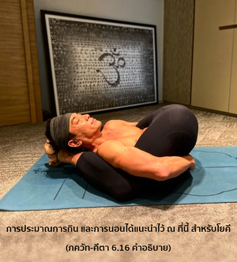

โอ้ อรฺชุน เป็นไปไม่ได้ที่บุคคลจะมาเป็นโยคี หากเขากินมากเกินไป หรือกินน้อยเกินไป นอนมากเกินไป หรือนอนไม่พอ


การประมาณการกิน และการนอนได้แนะนำไว้ ณ ที่นี้ สำหรับโยคี การกินมากเกินไปนั้น หมายถึง กินเกินความจำเป็นที่จะดำรงรักษาร่างกาย และวิญญาณไว้ด้วยกัน ไม่มีความจำเป็นที่มนุษย์ต้องกินสัตว์ เพราะมีอาหารมากมาย เช่น เมล็ดข้าวต่างๆ ผัก ผลไม้ และนม อาหารง่ายๆ เหล่านี้จัดอยู่ในระดับแห่งความดีตาม ภควัท-คีตา อาหารที่ทำจากสัตว์จัดอยู่ในระดับอวิชชา ฉะนั้น พวกที่ชอบกินเนื้อสัตว์ ชอบดื่มสุรา ชอบเสพสิ่งเสพติด และกินอาหารที่ไม่ถวายให้องค์กฺฤษฺณก่อน จะได้รับความทุกข์จากวิบากกรรม เพราะกินแต่ของที่เป็นพิษทั้งนั้น ภุญฺชเต เต ตฺวฺ อฆํ ปาปา เย ปจนฺตฺยฺ อาตฺม-การณาตฺ ผู้ใดที่กินเพื่อความสุขของประสาทสัมผัส หรือปรุงอาหารสำหรับตนเอง ไม่ถวายอาหารให้องค์กฺฤษฺณจะกินแต่ความบาปเท่านั้น ผู้ที่กินความบาป และกินเกินกว่าที่กำหนดไว้สำหรับตน ไม่สามารถปฏิบัติโยคะได้อย่างสมบูรณ์ วิธีที่ดีที่สุด คือ กินเฉพาะ ปฺรสาทมฺ อาหารที่เหลือหลังจากการถวายให้องค์กฺฤษฺณแล้ว บุคคลในกฺฤษฺณจิตสำนึกไม่กินอะไรที่ไม่ถวายให้องค์กฺฤษฺณก่อน ฉะนั้น บุคคลในกฺฤษฺณจิตสำนึกจึงสามารถบรรลุถึงความสมบูรณ์ในการปฏิบัติโยคะ ผู้ที่อดอาหารแบบฝืนธรรมชาติ คิดค้นวิธีการอดอาหารขึ้นมาเองไม่สามารถฝึกปฏิบัติโยคะได้ บุคคลในกฺฤษฺณจิตสำนึกอดอาหารตามที่พระคัมภีร์ได้แนะนำไว้ และไม่อดอาหารหรือกินมากเกินความจำเป็น ดังนั้น เขาจึงสามารถฝึกปฏิบัติโยคะได้ ผู้ที่กินมากเกินความจำเป็นจะฝันมากในขณะหลับ ดังนั้น จึงต้องนอนมากเกินความจำเป็น เราไม่ควรนอนมากกว่าหกชั่วโมงต่อวัน ผู้ที่นอนมากกว่าหกชั่วโมงในยี่สิบสี่ชั่วโมงแน่นอนว่าจะถูกอิทธิพลของระดับอวิชชาครอบงำ บุคคลผู้อยู่ในระดับอวิชชาจะมีความเกียจคร้าน และชอบนอนมาก บุคคลเช่นนี้จะไม่สามารถปฏิบัติโยคะได้